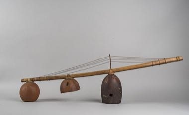

Home / Classical Worlds / Africa: Sahel, West and Central
Encyclopedia ID 1420
Mvet
Also known as Fang stick zither

.jpg){kind=link}
Play the mvet by plucking strings on both sides of a bridge while opening and closing the resonators with the chest to shape the melody.
Heritage note
Part of the living heritage of Gabon, Cameroon, Equatorial Guinea. Some forms of this practice carry deep meaning for the communities who keep it; here we describe the play and the craft only, with respect for its roots.
Origins
Usually placed in the era of Classical Worlds (about 1000 BCE to 500 CE), although its exact origins are uncertain, within the cultural world of Africa: Sahel, West and Central.
Sources
Related entries

Fula Riti One-String Fiddle
Guinea · Musical instruments
Imzad Fiddle
Niger +2 · Musical instruments


String Marionette Theatre
Czechia · Performance and storytellingPlay preview · in the Story & Theatre of the World app
Kathputli string puppets
India · Performance and storytellingPlay preview · in the Story & Theatre of the World app
More from Gabon

Ogooué river pirogue journey
Gabon · Racing
Kale
Gabon · Board and table games